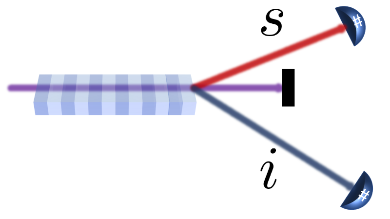

This software can generate arbitrary probability distributions based on the known mode structure of a light field.
One of possible applications is mode structure reconstruction of the unknown light source. Conjugated (entangled) light measured with two photon number resolving detectors may also allow extraction of the overall detection efficiency of the experimental setup in both signal and idler arms.